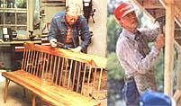
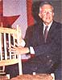
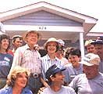
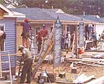

From president to chairman of the boards
Maybe it's because I, too, was born and raised in a small south Georgia town, but I found sitting down to talk to Rosalynn and Jimmy Carter as comfortable as lazing in a porch swing on a summer afternoon, sipping minty iced tea. Just such a swing overlooks a roaring mountain stream at the Garters' log cabin retreat in the Blue Ridge Mountains. Along with the cabin's other furniture, the swing was designed and built by the former president, a master woodworker who selects and cuts the trees for such projects from his 160-acre farm. He strips off the bark (which he sometimes uses for caning) and shapes the wood into furniture and other items destined to become heirlooms.
"My daddy was a good man with tools," he recalls, "so learning how to use them was as natural as breathing for us. If something broke, we had to fix it ourselves. You didn't call somebody in to repair something or replace it with something new. We had these skills-all farmers did during the Depression years-and we had very well equipped shops, both for woodworking and blacksmithing."
Over the years, Carter has made some 50 household items, about half of which he has given away as gifts. But some pieces still sit around the family's Plains house and have been in use for over 30 years. His wife is quick to point out, however, that his skills improved as time went on. "When we came home from the Navy in 1953, he built a sofa and a lounge chair for the back porch. He used nails in them. Now he builds everything without nails. He's studied woodworking and worked at it, and he's made really beautiful furniture for our home-including a pencil post bed and tables by the side."
His woodworking aptitude served Carter well during his political campaigns, particularly when meeting factory workers. "You don't have to say but a few things to people who work in a factory before they realize that you, yourself, have been a laborer. It may be a different kind of skill from theirs, but there's a rapport, sort of like in a fraternity, among people who work with their hands."
Once he campaigned his way to the presidency, Carter occasionally managed to slip in a few hours at the carpenter's shed at Camp David, because, in his opinion, "What we need in our lives is an inventory of factors that never change. I think that skill with one's own hands-whether it's tilling the soil, building a house, making a piece of furniture, playing a violin or painting a painting-is something that doesn't change with the vicissitudes of life. And for me, going back to the earth or going back to the woodshop have always been opportunities to reinforce my basic skills. No matter if I was involved in writing a book, conducting a political campaign, teaching at Emory University or dealing with international affairs, I could always go back-at least for a few hours at a time-to the woodshop.That's meant an awful lot to me. It's a kind of therapy, but it's also a stabilizing force in my life-a total rest for my mind.
"When I'm in the woodshop," he continues, "I don't ever think about the chapter I'm writing or the paragraph I can't complete or the ideas that don't come. I'm thinking about the design of a piece of furniture, how the wood's going to fit together, what joint I'm going to use and whether or not my hand tools are sharp."
In Jimmy and Rosalynn Carter's recently published book, Everything to Gain: Making the Most of the Rest of Your Life (Random House, $16.95), they explain candidly how they used back-to-basics skills to confront and resolve their "traumatic" political defeat, an abrupt departure from Washington and their fears of an empty future.
"In the book," Jimmy says, "we try to relate our lives, not to the White House or to the governor's mansion, but to Plains-for a couple of reasons. One, to show the attraction of a small town, and, second, to make it clear that the book is not just about a cou plE who happened to have been the First Family of the nation; it's also written for the average person who loses a job, has an unexpected career change, has to move to a place not of his or her choice, has a last child leave home. Or for a married couple who suddenly find themselves at retirement age and living together for the first time all day long-not just at night. I think there's a lot in it for people to learn-not only how to add 11 more years to their lives by changing personal habits, but what to do with those 11 years: how to make them challenging and exciting and gratifying and filled with adventure-even in a town as small as Plains."
The Carters plunged enthusiastically into such projects as laying a sidewalk and putting a hardwood floor in their unfinished attic. Rosalynn has picked up additional carpentry skills in working with one of their favorite organizations, Habitat for Humanity, a volunteer housing program for the poor with 171 projects in this nation, as well as others in 17 foreign countries (see page 45 for details). She doesn't, however, spend much time in the Plains woodshop.
"She's welcome," her husband asserts, "but she's got her own things to do."
"I work in the yard, tend flower beds, trim shrubbery," she says.
"And we both spend a good bit of time on our farm," adds Carter. "We take care of the timberlands. Sometimes we go for long walks in the woods. I may see a particular hickory or white oak tree that I think would be suitable for four or five-perhaps, seven or eight-chairs or stools or for some other piece of furniture. Out of one, say, 12-inch hickory, you can make 10 chairs if the tree is straight and the grain is good. I usually select a tree close to home, though, since I have to tote the pieces back to the woodshop area.
"One of my favorite kinds of woodworking involves green wood, but there's a tremendous amount of hard labor involved in that. You also have to develop an intimacy with the woodlot to start with-and then between you and a particular tree. You have to envision what your project is going to be like and then try to handle the different rates at which the wood dries, so the joints get tight and become indestructible. It's the kind of technical problem that appeals to me," says the former nuclear engineer.
It wasn't until Carter left the White House (prematurely, he thinks) that he acquired a complete collection of woodworking tools and machines (a gift from his former staff), and he's obviously made good use of them. Still, his favorite tools are a drawknife and spokeshaves. And he uses a simple, oldfashioned method of bending his wood.
"Get a pot of water and a length of six-inch-round metal stovepipe with a 90° elbow-you can find it in any hardware store. You just put the elbow in the boiling water and let the steam go through the pipe. Then you put a towel or newspaper in the end to hold the steam in and incline the pipe a little bit so that, as the steam condenses, it can run back into the pot. It's a woodsteamer that might cost $4." For long pieces, he attaches another length of pipe.
His favorite place to shop for such hardware? He was quick to answer. "Highland Hardware in Atlanta is one of the best stores I know in the country. Really tops! The store brings in the best woodworkers in the nation to teach two- and three-day seminars. I've attended some of those.
" Nor does Carter foresee a time when such training centers and the skills they teach will become anachronistic. "Take cars. There are obviously so many new electronics components to an automobile that you have to have special equipment of a highly costly nature to do rudimentary repairs. But the basic skills of working with an engine or working with tools, I think, will always be valuable. Somebody's got to make the tools to repair the machines, make the dies and the stamps for the first model to be tested.
" Obviously, most of today's young people don't grow up routinely learning to use their hands "as naturally as breathing," as Carter did. But he thinks they still have an advantage his parents' generation lacked.
"Back then, you'd start working at the age of 16 or 18 and work until you died or were physically incapable of working anymore.
You began work at sunrise and worked until dark. But, nowadays, you work 40 hours a week, get a couple of weeks off for vacation and then retire at 55, 60 or 65. You have so much spare time to take on additional exciting things. Sometimes they can be quite productive things; sometimes just enjoyable; sometimes dedicated to serving others.
In Everything to Gain we try to present a panorama of activities an average person can undertake. We try to point out that no matter what stage of life you may be in-young, middle-aged or retired-there's the possibility of a constantly expanding arena of interest, excitement, challenge, gratification and adventure. In this book we encourage people to take on new things that might look very difficult, but that become very gratifying once the person is involved." "If you have a crisis of any kind," Rosalynn adds, "one of the best things to do is to learn something new.
" Something new-emphatically not a return to politics-is what the Carters seek. He is working on a book about his outdoor experiences, going back to his early life as a boy in the woods, fields and swamps around Plains. Rosalynn, meanwhile, is busy preparing for a Carter Center conference in February on "Women and the Constitution," to be cochaired by Lady Bird Johnson, Pat Nixon and Betty Ford, and featuring such speakers as Sandra Day O'Connor, Barbara Jordan, Coretta King and Geraldine Ferraro. The former president's main focus remains world peace, as it was when he was in office.
"I think that the possibility that the Carter Center could assist in the peaceful resolution of international disputes is the most exciting thing for us. There is no place on earth where this is done, so-for trouble spots around the world-we hope to provide the theory, the techniques and the skills to assist the United Nations, the Organization of American States, the Organization of African Unity and the Commonwealth Nations to bring about the most effective approach to restoring peace." The Carters themselves have made their own peace with life-after-the-White-House and appear to have ruled out any further political plans.
"If an American president who is a Democrat asked me to take on a particular task for a limited period of time, I would be glad to try to do that-but, no, not as far as a permanent job and certainly not to seek elective office again." In the meantime, in the light of the current Iran-Contra scandal, Carter is increasingly regarded as vindicated for the way he dealt with the Iran hostage situation that so darkened the last year of his presidency. "It was the most important factor in losing the election. I know, because I shared with the American people the frustration of being the most powerful nation on earth and not being able to get 54 Americans back home. I was as frustrated as they were. But I also know we handled the Iran question properly.
Not one Monday-morning quarterback who has looked at that situation has had anything to add or has suggested a better way to have done it. And, remember, we brought every hostage back safely to freedom. We protected the interest of our country. We never told a lie. We never violated the law. We never paid ransom."
A Habitat
"barn
raising" in
Carolina
produced
14 homes
for
American
families.
Today, such problems seem remote from the active way the Carters are succeeding in making the most of the rest of their lives. "If we have not achieved our early dreams, we must either find new ones or see what we can salvage from the old," they write. "If we have accomplished what we set out to do in our youth, then we need not weep like Alexander the Great that we have no more worlds to conquer. There is clearly much left to be done, and whatever else we are going to do, we had better get on with it.
" Despite Carter's disclaimer about running again for office, the pendulum of American politics swings back and forth sometimes in curious, unexpected arcs. Richard Nixon, after a bitter defeat for the presidency, also gave up on ever running again, only to find himself later in the White House. With the Democrats currently lacking a clear frontrunner, who knows what could happen? James Alexander, an experienced political hand who now heads the Washington-based consulting firm World-Net, put the Carter legacy this way: "Carter, you know, has never received the accolades or credit he deserves for the Camp David Accords between Israel and Egypt. That was a remarkable feat.
And had he been presented with the opportunity to negotiate with a man of Gorbachev's caliber, no telling what great things might have come about.
It's obvious to anyone who cares to notice that Abraham Lincoln and Jimmy Carter share many of the same attributes and attitudes. Yet, we revere Lincoln, while we often laughed at Carter. But we aren't laughing much anymore. I think we're starting to miss what Carter represented. He was right when he said that we get the government we deserve. When all is said and done, he was a president of enormous integrity. `Honest Jim.' How's that?"
"EVERY LITTLE BIT..:'
It was 95 humid degrees under Charlotte, North Carolina's relentless July sun. Jimmy Carter stepped away for a moment from the bustle of the workers, autograph seekers, photographers and television crews. Leaning in the doorway of a newly finished house, he pushed back his hard hat from a heat-flushed face and gazed contentedly at the activity swirling around him.
"How does it feel?" I asked. "It feels good," he replied, and his famous smile was touched with pride. President Carter had reason to be proud. In a kind of old-fashioned barn-raising, he, Rosalynn and their daughter, Amy-along with numerous volunteers from around the country-had built 14 three-bedroom, one bath houses in just five days for families that, without them, would never have had a chance to own a home of their own.
It was a small dent-but a dent nevertheless-in the problems of substandard housing and homelessness faced by much of the world's population.
No More Shacks is the motto of Habitat for Humanity, the nonprofit organization to which Carter has given so much of his time, energy and outstanding carpentry skills. Its founder and director, Millard Fuller, was a millionaire at the age of 30. Yet, when his pursuit of the dollar nearly cost him his marriage, Fuller liquidated his assets, gave his money to charity and moved to a Christian community, Koinonia Farm, in southwest Georgia, where he became involved with providing low-cost, no-interest housing to the poor.
Later, as a missionary in Zaire, he was told, "You come here and build a house for God and yourself and then you leave. We need houses, too." Eleven years later, somewhere in the United States or in a Third World country, Habitat completes one house for one family every day-and the goal is two houses a day, then three, then more. It works this way: Regardless of the location, future homeowners are involved in the project from the beginning, their contribution determined by what is practical. In the U.S., they put in 500 to 1,000 hours of "sweat equity" by working on either their own house or other Habitat projects. In for- eight countries, they might make their own bricks, gaining new skills and confidence as well as a home.
Funding comes from individuals and organizations, and payments on the no-profit, no-interest mortgages are recycled to build more homes. (A house in Bolivia might cost $1,000; here, costs run around $23,000.) Within the United States, local Habitat affiliates set their own priorities, raise their own funds, supply their own volunteer labor and choose their own selection committees. Habitat's international headquarters in Americus, Georgia, supports foreign projects with funds and volunteers. The organization has been growing at an annual compounded rate of 80070, which means that every year it has almost doubled. But Jimmy and Rosalynn Carter's support recently brought it to national attention. "When I came on the Habitat board just three years ago," he noted, "there were 56 communities with Habitat projects. Now there are 205. It's expanding about as rapidly as we can care for it-keep it operating in a businesslike way and also keep the humane, compassionate, personal involvement here and around the world." And the Carters lend more than just their names and organizational skills. They work as hard physically on a project as any of the other volunteers.
"Jimmy Carter is just another serious carpenter," commented an Associated Press reporter who had stuck close to the former president throughout the week of construction. "Get in his way, and you're likely to get your toes banged." This interest in housing for the poor is not new, however. During the last year of the Carter administration, 305,000 units of subsidized government housing were built. In 1987, that number has dropped to 23,000. Asked about this huge reduction, Carter replied, "When government neglects its responsibility, which it's certainly doing now, not only is it a disgrace to our nation, but it means that there are more homeless every year no matter what the rest of us do. Other than that," he laughed,
"I think they're doing a great job in Washington on housing. "Obviously, we can't build a Habitat house for every homeless person," he continued, "but still the program plants the seeds. First of all, it demonstrates that we all have neighbors who don't have electricity, running water, a roof that doesn't leak or a warm place to sleep in the wintertime. Second, it shows that with volunteer labor, contributed materials, good work, faith and a minimum amount of money, much can be achieved. And," he pointed out, "the workers benefit as much as the people who move into the new houses.
It's an exhilarating, gratifying experience. You get more out of it than you put into it." By noon on Friday, as the Carters and most of the workers retired to a great gold-and-yellow-striped tent for lunch and some welcome shade, an eagerly awaited announcement brought cheers. All 14 houses had been approved for occupancy. But some volunteers worked on, installing carpet and moving in furniture. One of these, Nancy Owens, had taken a day off from her job with a Charlotte landscaping company. She was busily planting red geraniums around a front stoop. "You think you can't do anything about the big problems," she said, "until you realize that every little bit helps." - SP
YOUR LITTLE BIT
For information on how you can help, contact Habitat for Humanity, Habitat and Church Streets, Americus, GA 31709; 912/924-6935.
|
Whether crafting furniture at home (left), or building homes as part of the Habitat for Humanity program (right), Carter is a craftsman. |
 Swapping the frustration of politics for tire joy of handwork (right).Swapping the frustration of politics for tire joy of handwork (right). |
 A Habitat ""barn raising"" in Carolina produced 14 homes for American families |
|
""There is clearly much left to be done .... We had better get on with it |
 ""Habitat is expanding about as rapidly as we can care for it."" |
 ""We can't build a house for every homeless person, but the program plants the seeds."" |
|
|
|
|